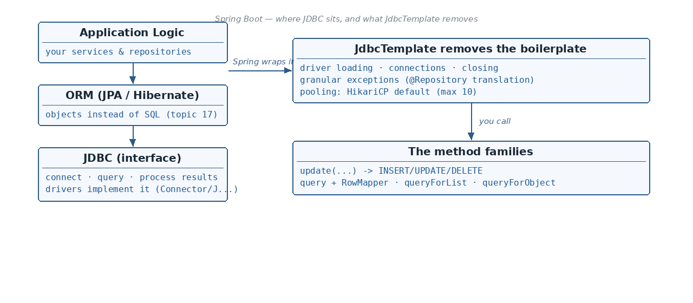

How JdbcTemplate solves each plain-JDBC problem
☕ 8 min read · 🎬 Video walkthrough · 📊 UML diagram · 💻 Runnable code
⚡ In a nutshell — The data-access architecture: Application Logic → ORM → JDBC → DB Driver → Relational DB · What JDBC is, and the real driver classes for MySQL, Postgres and H2 · The 5 problems of plain JDBC — and how spring-boot-starter-jdbc solves every one of them · JdbcTemplate + @Repository and granular exception translation
JDBC (Java Database Connectivity) provides an interface to:

The actual implementation is provided by the specific DB driver:
com.mysql.cj.jdbc.Driverorg.postgresql.Driverorg.h2.DriverEverything above JDBC (JPA + Hibernate, the ORM layer) also ends up talking to the database through JDBC — this topic is about using JDBC directly; the ORM layer comes in the next topics.
Using raw JDBC, all of this is your job, every single time:
Statement etc.// Plain JDBC — everything is on YOU:
Class.forName("com.mysql.cj.jdbc.Driver"); // 1. driver loading
Connection con = DriverManager.getConnection(url, user, pwd); // 2. connection making
try {
PreparedStatement ps = con.prepareStatement("SELECT * FROM users");
ResultSet rs = ps.executeQuery();
// loop rs, map columns by hand ...
} catch (SQLException e) { // 3. exception handling
// ONE abstract SQLException for every possible failure
} finally {
// 4. close ResultSet, Statement, Connection — in the right order
}
// 5. connection pool? build and manage it yourself...
Add one starter:
<dependency>
<groupId>org.springframework.boot</groupId>
<artifactId>spring-boot-starter-jdbc</artifactId>
</dependency>
Spring Boot provides the JdbcTemplate class, which helps to remove all the boilerplate. A minimal repository:
@Repository // -> granular SQL exceptions returned (see below)
public class UserRepository {
@Autowired
JdbcTemplate jdbcTemplate;
public void createTable() {
jdbcTemplate.execute(
"CREATE TABLE users (id INT PRIMARY KEY, name VARCHAR(50), age INT)");
}
}
Point it at your database with spring.datasource.* properties — note that datasource controls two things: the database connection and the connection pool:
spring.datasource.url=jdbc:mysql://localhost:3306/mydb
spring.datasource.username=root
spring.datasource.password=secret
spring.datasource.driver-class-name=com.mysql.cj.jdbc.Driver
JdbcTemplate loads it at application startup, in the DriverManager class.jdbcTemplate takes care of it whenever we execute any query.SQLException; with jdbcTemplate we get granular errors like DuplicateKeyException, QueryTimeoutException etc. (defined in the org.springframework.dao package).update or query method, after success or failure of the operation, jdbcTemplate takes care of either closing the connection or returning it to the pool itself.Good to know: the
@Repositoryannotation is what enables that exception translation — Spring converts checkedSQLExceptions into its uncheckedDataAccessExceptionsubtypes, so a unique-key violation really arrives asDuplicateKeyException, not a generic SQL error.
The defaults can be tuned from properties:
spring.datasource.hikari.maximum-pool-size=10
spring.datasource.hikari.minimum-idle=5
Added: out of the box Hikari's
maximum-pool-sizeis 10, andminimum-idledefaults to the same value as the max — which is why the notes say "min and max pool size of 10". Setminimum-idlelower (like 5 above) only if you want the pool to shrink when idle.
If properties are not enough, define the pool yourself as a @Bean:
@Configuration
public class DataSourceConfig {
@Bean
public DataSource dataSource() {
HikariDataSource dataSource = new HikariDataSource();
dataSource.setDriverClassName("com.mysql.cj.jdbc.Driver"); // "x"
dataSource.setJdbcUrl("jdbc:mysql://localhost:3306/mydb"); // "y"
dataSource.setUsername("root"); // "p"
dataSource.setPassword("secret"); // "k"
dataSource.setMaximumPoolSize(20);
dataSource.setMinimumIdle(5);
return dataSource;
}
}
update(String sql, Object... args) — Insert, Update, Deleteupdate(String sql, PreparedStatementSetter pss) — Insert, Update, Deletequery(String sql, RowMapper<T> rowMapper) — Get multiple rowsqueryForList(String sql, Class<T> elementType) — Get a single column of multiple rowsqueryForObject(String sql, Object[] args, Class<T> type) — Get a single rowqueryForObject(String sql, Class<T> requiredType) — Get a single valueAll six in one runnable repository:
@Repository
public class UserRepository {
@Autowired
private JdbcTemplate jdbcTemplate;
// 1) update(sql, args...) — Insert / Update / Delete
public int insertUser(int id, String name, int age) {
return jdbcTemplate.update(
"INSERT INTO users (id, name, age) VALUES (?, ?, ?)", id, name, age);
}
// 2) update(sql, PreparedStatementSetter) — Insert / Update / Delete
public int updateName(int id, String newName) {
return jdbcTemplate.update("UPDATE users SET name = ? WHERE id = ?",
ps -> { ps.setString(1, newName); ps.setInt(2, id); });
}
// 3) query(sql, RowMapper) — get multiple rows
public List<User> findAll() {
return jdbcTemplate.query("SELECT id, name, age FROM users",
(rs, rowNum) -> new User(rs.getInt("id"),
rs.getString("name"), rs.getInt("age")));
}
// 4) queryForList(sql, elementType) — single column of multiple rows
public List<String> findAllNames() {
return jdbcTemplate.queryForList("SELECT name FROM users", String.class);
}
// 5) queryForObject(sql, args, rowMapper/type) — get a single row
public User findById(int id) {
return jdbcTemplate.queryForObject(
"SELECT id, name, age FROM users WHERE id = ?",
(rs, rowNum) -> new User(rs.getInt("id"),
rs.getString("name"), rs.getInt("age")), id);
}
// 6) queryForObject(sql, requiredType) — get a single value
public int countUsers() {
return jdbcTemplate.queryForObject("SELECT COUNT(*) FROM users",
Integer.class);
}
}
Added: a
RowMapper<T>is a tiny functional interface with one method —T mapRow(ResultSet rs, int rowNum).JdbcTemplatecalls it once per row of theResultSetand collects the returned objects into aList<T>— it is how one row of SQL becomes one Java object. The lambdas(rs, rowNum) -> new User(...)above are RowMappers.Good to know: always pass values through the
?placeholders (parameterized queries) as in the examples above — never concatenate user input into the SQL string. The driver sends parameters separately from the query, which makes SQL injection impossible for those values.
Added: four
JdbcTemplatefeatures that come up constantly in real projects and interviews:batchUpdate,BeanPropertyRowMapper,NamedParameterJdbcTemplate, andKeyHolder.
Inserting 1,000 rows with 1,000 update() calls means 1,000 network round-trips. batchUpdate sends them as one JDBC batch — often 10–50x faster:
public int[] insertAll(List<User> users) {
return jdbcTemplate.batchUpdate(
"INSERT INTO users (id, name, age) VALUES (?, ?, ?)",
new BatchPreparedStatementSetter() {
public void setValues(PreparedStatement ps, int i) throws SQLException {
User u = users.get(i);
ps.setInt(1, u.getId());
ps.setString(2, u.getName());
ps.setInt(3, u.getAge());
}
public int getBatchSize() { return users.size(); }
});
}
For MySQL add rewriteBatchedStatements=true to the JDBC URL so the driver really merges the inserts.
If column names match the bean's property names (user_name → userName works too — it converts snake_case), Spring can map rows automatically:
public List<User> findAllAuto() {
return jdbcTemplate.query("SELECT id, name, age FROM users",
new BeanPropertyRowMapper<>(User.class));
}
Convenient for simple read models; a hand-written RowMapper is still faster and more explicit for hot paths.
:name instead of ?With more than 2–3 placeholders, counting ? positions gets error-prone. NamedParameterJdbcTemplate wraps JdbcTemplate and lets you name the parameters:
@Repository
public class UserSearchRepository {
@Autowired
private NamedParameterJdbcTemplate namedTemplate; // auto-configured by Boot too
public List<User> findByAgeRange(int min, int max) {
String sql = "SELECT id, name, age FROM users WHERE age BETWEEN :min AND :max";
Map<String, Object> params = Map.of("min", min, "max", max);
return namedTemplate.query(sql, params,
new BeanPropertyRowMapper<>(User.class));
}
}
Bonus: named parameters make IN (:ids) queries easy — pass a List as the value and Spring expands it.
When the primary key is AUTO_INCREMENT, you usually need the generated ID back:
public long insertAndReturnId(String name, int age) {
KeyHolder keyHolder = new GeneratedKeyHolder();
jdbcTemplate.update(con -> {
PreparedStatement ps = con.prepareStatement(
"INSERT INTO users (name, age) VALUES (?, ?)",
Statement.RETURN_GENERATED_KEYS);
ps.setString(1, name);
ps.setInt(2, age);
return ps;
}, keyHolder);
return keyHolder.getKey().longValue(); // the DB-generated id
}
Added: Spring Boot can create tables and seed data at startup from two files on the classpath (
src/main/resources):schema.sql(DDL —CREATE TABLE ...) anddata.sql(DML —INSERT ...). For embedded DBs like H2 this runs automatically; for MySQL/Postgres you must opt in:
spring.sql.init.mode=always # default is "embedded" (H2 only)
This is exactly the top layer of the diagram in section 1 — JPA is the interface, Hibernate the implementation. How it works inside (EntityManager, Persistence Context...) is the next topic.
JdbcClient (Boot 3.2) is the fluent successor to JdbcTemplate — same engine, chainable API: jdbcClient.sql("...").param(...).query(User.class).list().connections ≈ cores × 2 + spindle count; more is usually worse. Monitor hikaricp.connections.pending.connection-timeout, validation-timeout, socket timeout in the JDBC URL, plus @Transactional(timeout=...) — a missing timeout is an outage waiting to happen.? placeholders) — this is your SQL-injection defense; string-concatenated SQL should fail code review.com.mysql.cj.jdbc.Driver, org.postgresql.Driver, org.h2.Driver).spring-boot-starter-jdbc + JdbcTemplate remove all of that; @Repository gives granular org.springframework.dao exceptions (DuplicateKeyException, QueryTimeoutException...).spring.datasource.hikari.* or a custom HikariDataSource @Bean.update(...) for Insert/Update/Delete; query(...) + RowMapper for multiple rows; queryForList for one column; queryForObject for one row / one value.batchUpdate for bulk writes in one round-trip; BeanPropertyRowMapper for auto row-to-bean mapping; NamedParameterJdbcTemplate for :name params (and easy IN (:ids)); KeyHolder to read auto-generated IDs; schema.sql/data.sql (+ spring.sql.init.mode) for startup DDL/DML.Next topic: JPA Architecture — Persistence Unit, EntityManagerFactory, EntityManager, Persistence Context and Dialect.
👏 Found this useful? Give it a few claps so more developers discover it, and follow for the whole series — every article ships with a UML diagram, runnable code, a narrated video, and a companion PDF. Happy building! 🚀